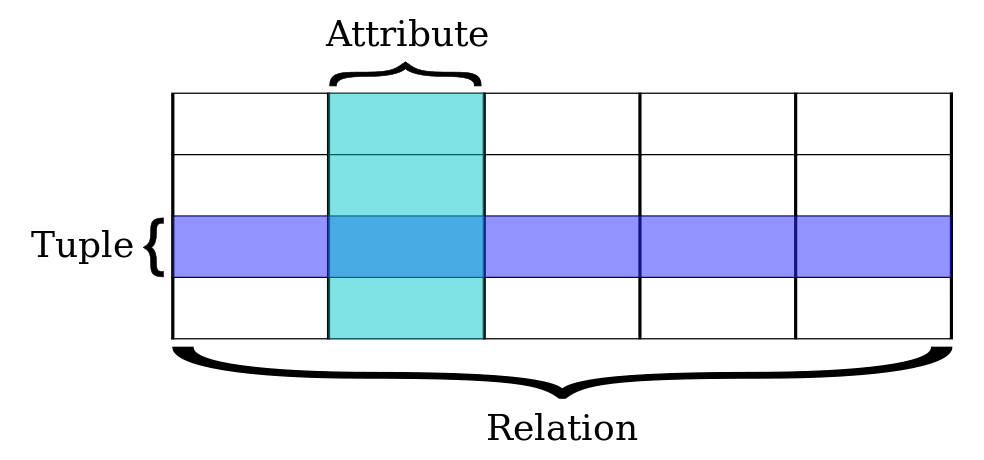
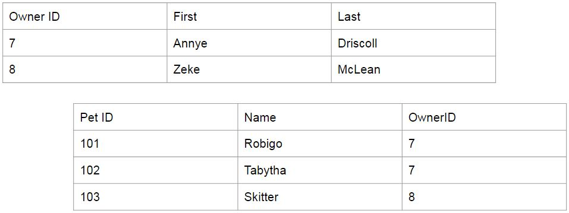

Popularity winner
Relational database = organizes data into one or more tables of columns and rows with a unique key identifying each row (record).
Photo credit: Wikimedia
Pet Tracker DB
Relation = data points related to each other are stored in a table.
Relation = tables are related to each other.
Relational Databases - Why?
- ACID makes it reliable for critical transactional systems.
- Acts as an all-purpose database.
- Older models did not perform well; they encouraged redundant and inaccurate data.
- Newer models are more specialty - solve a problem in one area but come at a high cost in other areas.
Relational Databases - Why?
- A set of rules called the normal forms ensures data redundancy is reduced and data integrity is upheld.
- The process of applying the normal forms is called normalization.
Pet Tracker DB - now in flat form!

Flat Pet Tracker DB
After a couple of additions...

Decomposition
= the process of splitting data into tables.

Decomposition - back to the normal forms
If we follow the normal forms when decomposing, then we are guaranteed we will be able to reconstruct the data.
Decomposition - First Normal Form
- Eliminate repeating groups in individual tables.
- Create a separate table for each set of related data.
- Identify each set of related data with a primary key.
Decomposition - Second Normal Form
- 1NF.
- Every non-prime attribute of the relation is dependent on the whole of every candidate key.
Decomposition - Third Normal Form
- 2NF.
- All the attributes in a table are determined only by the candidate keys of that relation and not by any non-prime attributes.
Successfully decomposed and normalized!

Joins
We put the data back together by joining tables
Joins
Every row in the pet table is matched to a row in the owner table.

What is Pets ⨝ Owners on Pet Name = Owner First?
Joins
The result: Pets ⨝ Owners on Pet Name = Owner First
Joins
During decomposition, we always copy a certain field to each table to serve as the relationship.

What is Pets ⨝ Owners on Owner First = Owner First?
Primary Key
What is Pets ⨝ Owners on Owner First = Owner First?
Primary Key
- A field (or set of fields) that uniquely identify rows.
- The minimal set of fields upon which the row is functionally dependent.
Primary Key - Functional Dependency
Let A and B be sets of fields in a table.
A functional dependency exists (A → B) if for every field[A] in the table we get back row[B].
Functional Dependency
Let A = (Owner First), B = (Owner Last). Can we say A → B?
Functional Dependency
Let A = (Owner First), B = (Owner Last). Can we say A → B?
Functional Dependency
Let A = (Owner First, Pet Name), B = (rest of pet facts). Can we say A → B?
Primary Key Candidate
Every time I see a particular Owner First + Pet Name, I expect to get back the same Pet Birthday, Pet Color, and Pet Skill.
Does the reverse hold true?
Primary Key
- The PK must be unique within the table.
- Only one PK is allowed per table.
- The PK is automatically indexed (for fast lookup!).
Primary Key Candidate
PKs must be unique within the table - for this reason, names make poor PKs.
Primary Key Candidate
For this reason, you’ll usually see a unique ID field used as a PK.
Primary Key
Primary keys are often “ID” fields in all tables.
- This is partly done for convenience
- ID fields are often autoincrement fields
- Remember PKs are automatically indexed, and numbers are faster to increment.
- Other tables may refer back to another table’s PK, and it’s easier and faster to bring in one column instead of multiple.
Primary Key
Foreign Key
= a field (or set of fields) that is a PK in some other table.
- There can be multiple FKs in a table
- FKs are how you designate that tables are related.
Foreign Key
These tables are not yet formally connected in any way!
Foreign Key
These tables are now related!
Referential Integrity
A database has referential integrity if rules are in place that ensure that a FK can never point to a row that doesn’t exist.
Foreign Key
Pet_IDs 3 and 5 have become orphan rows :(
Referential Constraints
Cascade = cascade changes in PK to all referencing FKs.
Restrict (or no action) = don’t allow changes to PK if there is a referencing FK.
Our original flat file...
Indexes
= a special data structure that speeds up data retrieval.

Consider the task of trying to find all references to an “Anna” character in War and Peace.
Indexes
- Indexes slow down writes
- Too many indexes can slow down queries
So it’s a tradeoff!
Indexes
What fields should be indexed?
- PKs are automatically indexed.
- FKs, especially if you enforce referential integrity
- Fields which will be queried over and over
- Name fields
- Phone number, if your system looks people up by phone
- State, if producing mass mailings by state

Okay, I know about 500 vocab words...now how do I start??
Designing a Database
1. Produce a conceptual data model
- Reflects the possible state of the external system being modeled.
- Can a person have more than 1 phone number?
- Can a customer also be a supplier?
- Establish definitions of the terminology used for entities (customers, products, cats) and their relationships and attributes.
Designing a Database
2. Translate the data model into a schema
- Often called logical database design; output is a logical data model.
- The logical data model is specific to the chosen database model and DBMS - we’re getting real and technical, at this point.
Designing a Database
3. Design the physical database
- Make decisions that affect performance, scalability, recovery, security, etc.